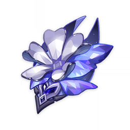
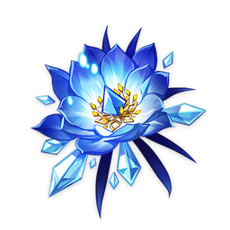

Genshin Impact · Versión 7.2
Análisis del Rol y Escalado
Skirk es un personaje de elemento Cryo originario de Khaenri'ah / Abismo que utiliza Espada Ligera y se posiciona en el tier T0.5 (S) Main DPS dentro del rol de Main DPS Cryo de Vacío (Sin Recarga de Energía tradicional). Su rendimiento en combate gira en torno a este eje principal: Escala con ATQ y Crítico; usa recurso propio (0% Recarga requerida).
Para maximizar su aporte en el equipo, la configuración prioritaria combina Fulgor Cerúleo con el conjunto de artefactos Finale of the Deep Galleries (4 piezas), respetando la jerarquía de estadísticas ATQ% (2,100+) > Prob. Crítica (70–80%) > Daño Crítico (200%+). Evitar Recarga y ME. y subiendo sus habilidades en orden: En campo: Habilidad (E) > Definitiva (Q). Quickswap: Q > E. Normales sin subir..
Mejores Armas
Opciones recomendadas ordenadas por rendimiento según el meta actual y compatibilidad con sus rotaciones:
-
 Fulgor Cerúleo ★★★★★BiS Firma674 ATQ base, 22.1% Prob. Crítica; al tener 0 Energía mantiene +48% ATQ y +40% Daño Crítico permanentes.
Fulgor Cerúleo ★★★★★BiS Firma674 ATQ base, 22.1% Prob. Crítica; al tener 0 Energía mantiene +48% ATQ y +40% Daño Crítico permanentes. -
 Luna Ondulante de Futsu ★★★★★Alternativa 5★33.1% Prob. Crítica, +12% Bono Elemental y +40% Daño de Ataques Normales.
Luna Ondulante de Futsu ★★★★★Alternativa 5★33.1% Prob. Crítica, +12% Bono Elemental y +40% Daño de Ataques Normales. -
 Reflejo de las Tinieblas ★★★★★Alternativa 5★674 ATQ base, 44.1% Daño Crítico y hasta +40% Bono Elemental Cryo.
Reflejo de las Tinieblas ★★★★★Alternativa 5★674 ATQ base, 44.1% Daño Crítico y hasta +40% Bono Elemental Cryo. -
 Réquiem Abisal ★★★★Mejor F2P Forja565 ATQ base, 27.6% ATQ% y bono plano de ATQ tras limpiar Pacto Vital con curación.
Réquiem Abisal ★★★★Mejor F2P Forja565 ATQ base, 27.6% ATQ% y bono plano de ATQ tras limpiar Pacto Vital con curación. -
 Calamidad de Eshu ★★★★Opción 4★ Evento+20% Daño y +8% Prob. Crítica en Normales/Cargados bajo escudo (ej. Dahlia).
Calamidad de Eshu ★★★★Opción 4★ Evento+20% Daño y +8% Prob. Crítica en Normales/Cargados bajo escudo (ej. Dahlia).
Mejores Sets de Artefactos
Combinaciones de 4 piezas o mezclas de 2 piezas para maximizar su contribución:
-

Finale of the Deep Galleries (4 piezas) BiS Absoluto+15% Bono Cryo; con 0 Energía otorga +60% Daño de Normales y +60% Daño de Definitiva.
-

Blizzard Strayer (4 piezas) Alternativa Congelado+15% Bono Cryo y hasta +40% Prob. Crítica contra enemigos congelados.
Estadísticas Principales y Secundarias
Atributos prioritarios en artefactos para un balance óptimo de daño o soporte:
| Pieza | Estadística Principal |
|---|---|
| Reloj (Arenas) | ATQ% |
| Cáliz | Bono Daño Cryo |
| Corona | Daño Crítico / Prob. Crítica |
Prioridad de Subestadísticas
- ATQ% (2,100+) > Prob. Crítica (70–80%) > Daño Crítico (200%+). Evitar Recarga y ME.
Prioridad de Talentos
En campo: Habilidad (E) > Definitiva (Q). Quickswap: Q > E. Normales sin subir.
Objetivos de Estadísticas (Nivel 90)
Valores de referencia verificados para evaluar el equipamiento de Skirk en nivel 90 con artefactos de 5 estrellas:
| Atributo | Meta Recomendada |
|---|---|
| Vida | 17,000 |
| Ataque | 2,100+ ATQ |
| Defensa | 750 |
| Maestría Elemental | 0 (Evitar) |
| Recarga de Energía | 0% (Sin energía) |
| Balance Crítico | 70% – 80% CR / 200%+ CD |
Talentos de Combate y Materiales (Nivel 1 al 10)
Habilidades principales de Skirk y desglose exacto de libros, materiales y Mora para mejorar sus talentos:


Composiciones de Equipo Recomendadas
Alineaciones con mayor sinergia elemental y amplificación de daño en el Abismo y Teatro Fantasía:
Congelado Premium Hydro/Cryo
Skirk • Escoffier • Furina • Vodyanitsa
Respeta la restricción Hydro/Cryo de su pasiva con máximo techo de daño.
Congelado Accesible
Skirk • Xingqiu • Rosaria • Dahlia
Variante 4★/accesible manteniendo 100% Hydro/Cryo y escudo para Eshu.
Materiales de Ascensión (Nivel 1 al 90)
Recursos totales requeridos para desbloquear las 6 fases de ascensión de Skirk. Coste total de Mora en ascensiones: 420.000 Mora.


Sinergias y Guías Relacionadas
Explora las fichas de armas, artefactos y materiales de los principales compañeros de equipo para Skirk: